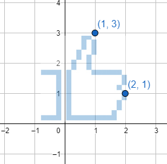

Se llama gráfico de $f(x)$ a la colección de puntos $(x,f(x))$.
Toda función tiene un gráfico asociado.
No todos los gráficos representan funciones.
Cada punto del gráfico de una función tiene la forma $(x,f(x))$. Notar que por cada valor de $x$ el gráfico pasa exactamente una altura que corresponde con el valor de $f(x).$Gráfico de una curva que no representa ninguna función. Existen valores de $x$ para los cuales hay dos alturas con puntos de la curva asociados.
Intercambio de coordenadas
Ejemplo: $(1,2)$ pasa a ser $(2,1)$
Ejemplo: $(3,3)$ pasa a ser $(3,3)$
Para un conjunto de puntos se comporta como rotación de 90° del gráfico, junto con una reflexión horizontal.
Al aplicarlo en gráficos de funciones el resultado a veces no corresponde con el gráfico otra función.
En el gráfico puede verse un punto y el correspondiente al intercambio de coordenadas. En el caso que los ejes tengan la misma escala, ambos puntos son simétricos respecto de la recta $y=x$.

Demostración del efecto de la inversión de coordenadas. La imagen de la derecha se obtiene de intercambiar las coordenadas de todos los puntos de la imagen de la izquierda.
Al posar el mouse o el dedo sobre la imagen de la izquierda, la misma hará una rotación de 90° anti-horaria y una reflexión horizontal.
Función inversa - Ideas
Se la suele notar $f^{-1}(x)$ (ojo, si es que existe).
Hace el camino opuesto \[f(x)=y \iff x=f^{-1}(y)\]
Los puntos de $f^{-1}(x)$ son los de $f(x)$
con las coordenadas intercambiadas.
El gráfico de $f^{-1}(x)$ sale del intercambio de coordenadas de los puntos del gráfico de $f(x)$.
Existen funciones que no tienen inversa.
$x$
$f(x)$
-2
-5
-1
-3
0
-1
1
1
2
3
$x$
$f^{-1}(x)$
-5
-2
-3
-1
-1
0
1
1
3
2
Tabla de valores de la función $f(x)=2\cdot x-1$ (a la derecha) y tabla de valores de su función inversa $f^{-1}(x)$. Notar las tablas tienen sus columnas de valores intercambiados.
En el siguiente gráfico puede verse el efecto de intercambiar coordenadas a todos los puntos del gráfico de una función (que aparece en el recuadro). Con el deslizador puede rotarse la curva hasta los 90° y luego con la casilla reflejarla horizontalmente. Puede verse así que la función $f(x)=x^2$, por ejemplo, no tiene inversa.
Función inversa - Teoremas
Las funciones que "no repiten resultados" pueden invertirse.
Definición: Diremos que una función $f(x)$ es inyectiva si no repite resultados, es decir,
\[
\forall x_1,x_2\in Dom f,
\underbrace{x_1\neq x_2\iff f(x_1)\neq f(x_2)}_{\text{distinto x da distinto resultado}}
\]
Teorema: Las funciones inyectivas son inversibles.
Propiedades:
$f(x)=y \iff x=f^{-1}(y)$ (al despejar, una función "pasa como su inversa").
$Im f^{-1} = Dom f$
$Im f = Dom f^{-1}$
El gráfico de $f^{-1}(x)$ es igual al gráfico de $f(x)$ luego de una rotación 90° y una reflexión horizontal.